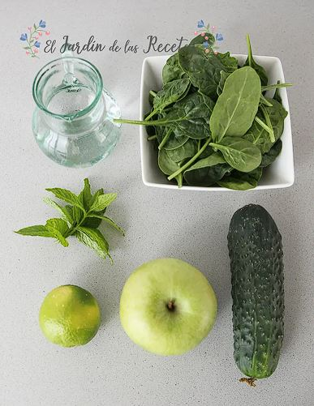
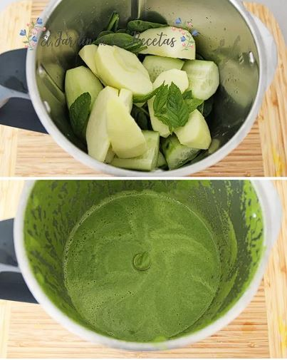

1. Ingredientes

Para esta receta necesitas un puñado de espinaca fresca, una manzana verde, medio pepino, el jugo de medio limón y un vaso de agua fría. Todos estos ingredientes son naturales, bajos en azúcar y ricos en fibra, vitaminas y antioxidantes que contribuyen a mejorar la digestión y el bienestar general.
2. Preparación

Lava bien todos los ingredientes bajo el chorro de agua. Pela el pepino y corta la manzana en trozos medianos retirando el corazón. Coloca todo en la licuadora junto con el agua y el jugo de limón. Licúa a velocidad alta durante un minuto hasta obtener una mezcla completamente homogénea y sin grumos. Si prefieres una textura más suave, puedes colarlo antes de servir.
3. Beneficios

Este batido es bajo en calorías y alto en nutrientes. La espinaca aporta hierro y magnesio, la manzana verde regula el azúcar en sangre, el pepino hidrata y el limón actúa como depurativo natural. Tomarlo en ayunas puede ayudar a activar el metabolismo, reducir la inflamación y mejorar los niveles de energía durante el día.
4. Resultado Final

Una vez listo, sirve el batido en un vaso alto y consúmelo de inmediato para aprovechar al máximo sus nutrientes, ya que con el paso del tiempo los ingredientes se oxidan y pierden propiedades. Se recomienda tomarlo en ayunas o como acompañamiento de un desayuno ligero. Evita añadir azúcar para mantener sus beneficios naturales.